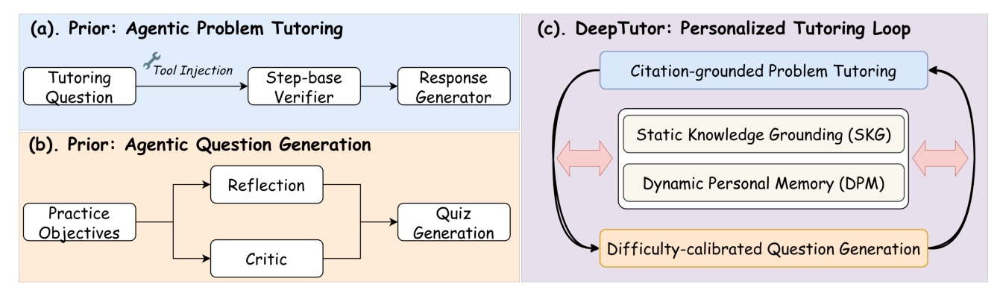
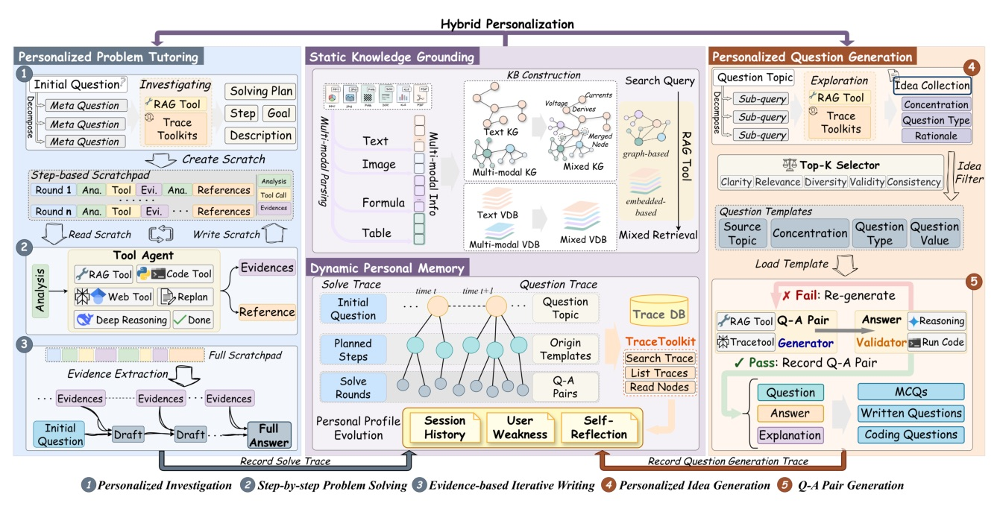
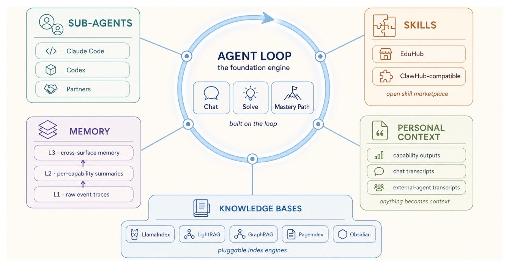
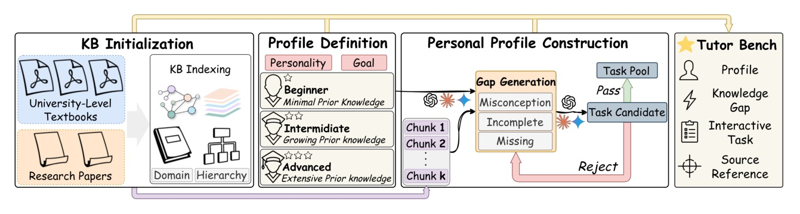
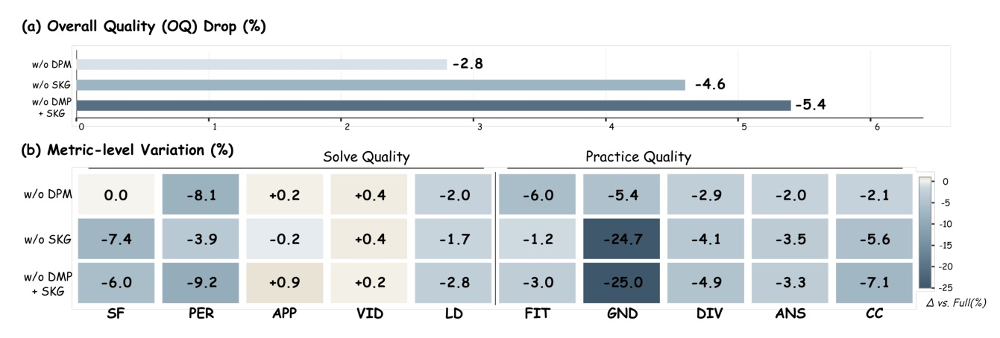
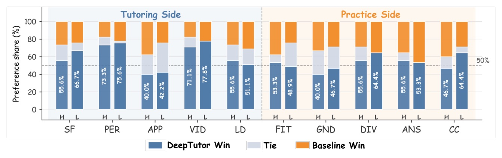

選題：2026-11-01 GitHub Trending（Python 日榜 #1、總榜 #7）HKUDS/DeepTutor，README 明確連到 arXiv 2604.26962 · Venue：PDF 頁首標「Technical Report」，未經頂會審稿 · Reviewer 資料：無
把解題輔導和出題接到同一份會演化的學習者記憶上：輔導時診斷出的弱點決定下一題出什麼，學生作答結果再回頭調整之後的講解。在自建的 TutorBench 上整體品質 +10.76%；把個人化整個關掉、只留 investigate → solve → write 骨架，五個 backbone 在通用推理 benchmark 上平均 +29.4%。


| 層級 | 內容 | 用途 |
|---|---|---|
| Level 1 | session 輸入 + 全域摘要 | 找「以前問過類似的嗎」 |
| Level 2 | 任務分解出的規劃單元（解題步驟 / 出題模板） | 找「以前怎麼拆這類問題」 |
| Level 3 | 細粒度執行紀錄：工具輸出、證據、驗證結果 | 找「具體在哪一步錯」 |
| 視角 | 記錄什麼 | 誰會讀 |
|---|---|---|
| Ds session history | 涵蓋主題、解法路徑、表現趨勢 | planner |
| Dw weakness | 有證據支撐的反覆混淆、錯誤模式、active / resolved gaps | planner、出題 agent |
| Dr self-reflection | 教學上的自我反思，指導之後的互動 | writer |
輔導中診斷出的弱點 → 寫進 Dw → 決定下一題出什麼；
學生在練習題上的表現 → 更新 Ds、Dr → 改善之後的講解。

作者明確標示：這些是架構實例，對保留率、參與度、學習成效的影響需要長期真人研究。

| System | Tutor Avg | Practice Avg | OQ | Δ% |
|---|---|---|---|---|
| Naive Tutor | 3.96 | 3.10 | 3.53 | – |
| CoT Tutor | 3.97 | 3.06 | 3.52 | −0.28% |
| Self-Refine Tutor | 4.05 | 3.08 | 3.57 | +1.13% |
| ReAct Tutor | 3.96 | 3.08 | 3.52 | −0.28% |
| DeepTutor | 4.39 | 3.42 | 3.91 | +10.76% |

| Variant | VID | PER | GND | OQ* |
|---|---|---|---|---|
| Naive Tutor | 3.89 | 4.24 | 2.46 | 3.53 |
| DeepTutor (full) | 4.81 | 4.59 | 2.96 | 3.91 |
| w/o SKG + DPM | 4.82 | 4.17 | 2.22 | 3.70 |
* OQ 由編者以 Table 5 十項指標平均重算；本頁為編者對 Table 5 的解讀，論文正文未直接如此陳述。

| Backbone | HLE | GPQA-D | LiveBench | GAIA | AA-LCR | Avg Δ |
|---|---|---|---|---|---|---|
| Gemini-3-Flash | 19.4 → 30.8 | 81.3 → 84.9 | 70.0 → 96.0 | 37.6 → 47.9 | 63.0 → 74.7 | +29.24% |
| Sonnet-4.5 | 8.4 → 14.6 | 72.2 → 73.2 | 64.3 → 82.0 | 29.1 → 45.5 | 53.3 → 54.0 | +32.03% |
| Qwen-3.5-Plus | 16.8 → 24.2 | 88.4 → 87.9 | 69.0 → 93.0 | 33.9 → 49.1 | 66.0 → 69.7 | +25.69% |
| GPT-5-Mini | 16.5 → 21.2 | 80.8 → 80.3 | 71.0 → 93.0 | 27.3 → 49.1 | 68.7 → 71.0 | +28.51% |
| Minimax-M2.5 | 14.0 → 19.4 | 82.8 → 83.3 | 59.3 → 73.0 | 23.6 → 42.4 | 66.0 → 76.4 | +31.50% |
此頁為編者推論，已與論文內容分開標示。
This process makes profile construction a tool-mediated analysis procedure rather than a single-pass textual summary.
這讓 profile 建構成為工具輔助的分析流程，而不是單次的文字摘要。§2.1.2, p.4
because the validator shares no reasoning chain with the generator, it must independently verify correctness
因為 validator 與 generator 不共享推理鏈，它必須獨立驗證正確性。§2.3, p.6
The two ablations therefore affect different parts of the rubric: SKG anchors what the tutor says, while DPM shapes how it adapts.
因此兩個 ablation 影響 rubric 的不同部分：SKG 錨定家教說什麼，DPM 決定它如何適應。§5.4, p.16
the gains point to the general value of the investigate–solve–write scaffold rather than learner-specific context alone.
這些增益指向 investigate–solve–write 骨架本身的通用價值，而不只是學習者專屬的 context。§5.5, p.16
| Variant | SF | PER | APP | VID | LD | FIT | GND | DIV | ANS | CC |
|---|---|---|---|---|---|---|---|---|---|---|
| Naive | 3.22 | 4.24 | 4.44 | 3.89 | 3.99 | 3.20 | 2.46 | 2.83 | 3.87 | 3.12 |
| CoT | 3.34 | 4.22 | 4.47 | 3.82 | 4.01 | 3.18 | 2.50 | 2.79 | 3.81 | 3.04 |
| Self-Refine | 3.28 | 4.28 | 4.61 | 3.94 | 4.14 | 3.17 | 2.49 | 2.88 | 3.88 | 2.97 |
| ReAct | 3.35 | 4.37 | 4.40 | 3.70 | 3.96 | 3.16 | 2.47 | 2.75 | 3.94 | 3.07 |
| DeepTutor | 3.36 | 4.59 | 4.56 | 4.81 | 4.61 | 3.35 | 2.96 | 3.44 | 3.98 | 3.38 |
| w/o SKG | 3.11 | 4.41 | 4.55 | 4.83 | 4.53 | 3.31 | 2.23 | 3.30 | 3.84 | 3.19 |
| w/o DPM | 3.36 | 4.22 | 4.57 | 4.83 | 4.52 | 3.15 | 2.80 | 3.34 | 3.90 | 3.31 |
| w/o SKG+DPM | 3.16 | 4.17 | 4.60 | 4.82 | 4.48 | 3.25 | 2.22 | 3.27 | 3.85 | 3.14 |
來源：arXiv 2604.26962 · Technical Report · 程式碼 github.com/HKUDS/DeepTutor